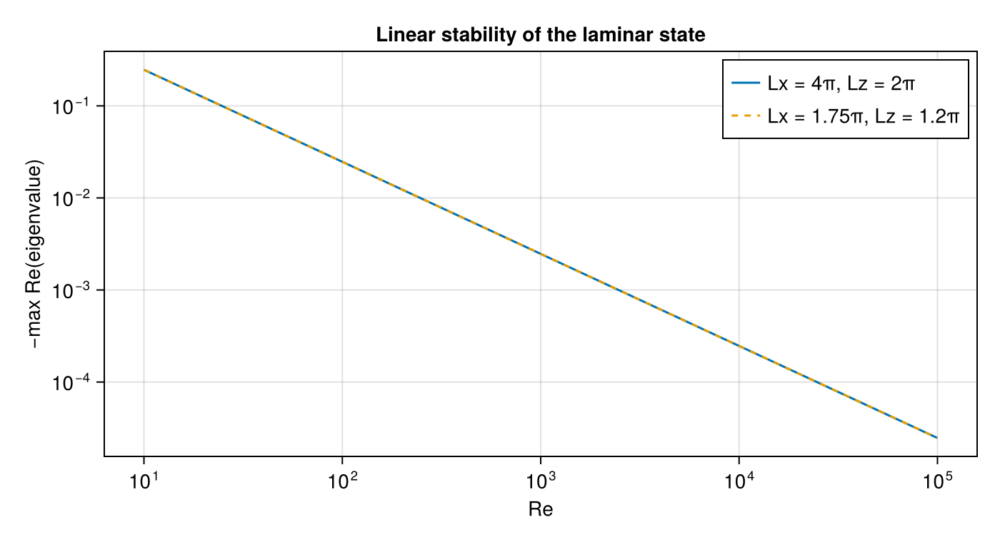

The nine-mode model
We use the model of Moehlis, Faisst and Eckhardt (MFE) for sinusoidal shear flow: fluid between two free-slip walls at $y = \pm 1$, periodic in $x$ (length $L_x$, streamwise) and $z$ (length $L_z$, spanwise), driven by the body force $\mathbf F(y) = \frac{\sqrt 2 \pi^2}{4 Re}\sin(\pi y/2)\,\hat{\mathbf e}_x$, whose laminar response is $\mathbf U(y) = \sqrt 2 \sin(\pi y/2)\,\hat{\mathbf e}_x$ (J. Moehlis, H. Faisst, B. Eckhardt, New J. Phys. 6, 56 (2004), eqs (1)–(6)).
The velocity is expanded in nine orthogonal, divergence-free fields satisfying the boundary conditions (NJP eqs (7)–(16)), $\mathbf u = \sum_{m=1}^9 a_m(t)\,\mathbf u_m(\mathbf x)$:
| mode | description |
|---|---|
| $\mathbf u_1$ | basic profile $\sin(\pi y/2)$ |
| $\mathbf u_2$ | streak |
| $\mathbf u_3$ | downstream vortex |
| $\mathbf u_4$, $\mathbf u_5$ | spanwise flows |
| $\mathbf u_6$, $\mathbf u_7$ | normal vortex modes |
| $\mathbf u_8$ | fully three-dimensional mode |
| $\mathbf u_9$ | modification of the basic profile, $\sin(3\pi y/2)$ |
Galerkin projection gives nine quadratic ODEs,
\[\dot a_i = -\frac{\lambda_i}{Re}\,a_i + \frac{\beta^2}{Re}\,\delta_{i1} + \sum_{j,k} N_{ijk}\,a_j a_k,\]
with $\alpha = 2\pi/L_x$, $\beta = \pi/2$, $\gamma = 2\pi/L_z$.
This repository is not a package: the model lives in plain files under src/, which the scripts include.
using LinearAlgebra, ForwardDiff, OrdinaryDiffEq, Random, CairoMakie
include(joinpath(get(ENV, "MFE_ROOT", joinpath(@__DIR__, "..")), "src", "setup.jl"))savefig (generic function with 1 method)Two independent implementations
mfe!(da, a, p, t) in src/mfe.jl is the explicit transcription of NJP eqs (21)–(32) (identical to SIADS 2005 eqs (3.14)–(3.23)). It is in place, type stable and does not allocate:
p = MFEParams(Re = 400.0, Lx = 4π, Lz = 2π)
a, da = randn(Xoshiro(1), 9), zeros(9)
mfe!(da, a, p, 0.0)
@allocated mfe!(da, a, p, 0.0)0src/galerkin.jl rebuilds the same equations from the basis fields alone: it evaluates the projections $\langle (\mathbf u_m\cdot\nabla)\mathbf u_l, \mathbf u_n\rangle$, $\langle \nabla^2 \mathbf u_m, \mathbf u_n\rangle$ and $\langle \mathbf F, \mathbf u_n\rangle$ by quadrature, with derivatives from ForwardDiff. The two agree to round-off on any domain, including ones not used in the papers:
function max_discrepancy(Lx, Lz; n = 100)
p = MFEParams(; Re = 400.0, Lx, Lz)
g = GalerkinMFE(p)
d1, d2 = zeros(9), zeros(9)
err = 0.0
for _ in 1:n
a = randn(9)
mfe!(d1, a, p, 0.0); galerkin_mfe!(d2, a, g, 0.0)
err = max(err, norm(d1 - d2, Inf))
end
return err
end
[(Lx, Lz) => max_discrepancy(Lx, Lz) for (Lx, Lz) in ((4π, 2π), (1.75π, 1.2π), (3.1, 5.3))]3-element Vector{Pair{Tuple{Float64, Float64}, Float64}}:
(12.566370614359172, 6.283185307179586) => 2.1405099914773018e-13
(5.497787143782138, 3.7699111843077517) => 2.5579538487363607e-13
(3.1, 5.3) => 2.7000623958883807e-13The projection also confirms that the modes are orthogonal with $\langle \mathbf u_n, \mathbf u_m\rangle = 2 L_x L_z\,\delta_{nm}$ (NJP eq (17)), that the viscous term is diagonal, and that only $a_1$ is forced:
coef = galerkin_coefficients(p)
(gram_error = norm(coef.G / (2p.Lx * p.Lz) - I),
viscous_offdiagonal = norm(coef.L - Diagonal(coef.L)),
forcing = round.(coef.f, digits = 12))(gram_error = 6.299700024578799e-14, viscous_offdiagonal = 8.357848935910739e-14, forcing = [2.467401100272, -0.0, 0.0, 0.0, 0.0, 0.0, 0.0, -0.0, 0.0])Number of nonzero quadratic couplings $N_{ijk}$ ($j \le k$), per equation:
g = GalerkinMFE(p)
[count(t -> t[1] == n, g.terms) for n in 1:9]9-element Vector{Int64}:
2
5
3
5
5
6
4
2
2Laminar state, energy, linear stability
The laminar flow is $a = (1, 0, \dots, 0)$, a fixed point for every $Re$. The quadratic terms conserve the energy $\sum a_i^2$, so energy only enters through the forcing and leaves through viscosity:
λ = decay_rates(p)
nonlinear(a) = mfe(a, p) - [-λ[i] * a[i] / p.Re + (i == 1) * p.β^2 / p.Re for i in 1:9]
maximum(abs(dot(a, nonlinear(a))) for a in (randn(9) for _ in 1:1000))3.552713678800501e-15The Jacobian at the laminar state has only negative eigenvalues, for all $Re$: the transition to turbulence is subcritical.
Res = 10 .^ range(1, 5, length = 200)
growth(dom) = [maximum(real, eigvals(ForwardDiff.jacobian(x -> mfe(x, MFEParams(; Re, dom...)), laminar_state()))) for Re in Res]
fig = Figure(size = (700, 380))
ax = Axis(fig[1, 1]; xscale = log10, yscale = log10, xlabel = "Re",
ylabel = "−max Re(eigenvalue)", title = "Linear stability of the laminar state")
lines!(ax, Res, -growth(NBC_DOMAIN); label = "Lx = 4π, Lz = 2π")
lines!(ax, Res, -growth(MFU_DOMAIN); label = "Lx = 1.75π, Lz = 1.2π", linestyle = :dash)
axislegend(ax)
The least stable eigenvalue is exactly $-\beta^2/Re$ (the decay of $a_1$), so the laminar state is only weakly stable at large $Re$ but never unstable. The Jacobian is, however, strongly non-normal: its symmetric part has positive eigenvalues growing like $Re$, which allows transient amplification of small perturbations (e.g. the lift-up coupling $a_1 a_3 \to a_2$ of vortex into streak).
J(Re) = ForwardDiff.jacobian(x -> mfe(x, MFEParams(; Re, NBC_DOMAIN...)), laminar_state())
[(Re = Re, max_eigenvalue_times_Re = maximum(real, eigvals(J(Re))) * Re,
max_symmetric_part_times_Re = eigmax(Symmetric((J(Re) + J(Re)') / 2)) * Re) for Re in (10.0, 1e3, 1e5)]3-element Vector{@NamedTuple{Re::Float64, max_eigenvalue_times_Re::Float64, max_symmetric_part_times_Re::Float64}}:
(Re = 10.0, max_eigenvalue_times_Re = -2.4674011002723395, max_symmetric_part_times_Re = 1.3034592202055788)
(Re = 1000.0, max_eigenvalue_times_Re = -2.4674011002723395, max_symmetric_part_times_Re = 512.6966304071502)
(Re = 100000.0, max_eigenvalue_times_Re = -2.4674011002723395, max_symmetric_part_times_Re = 51653.63150076031)